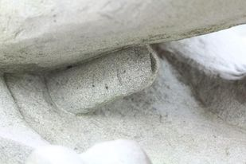
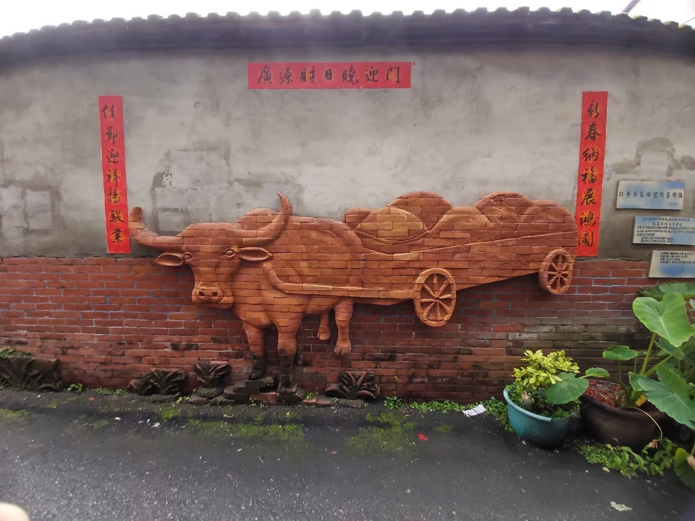
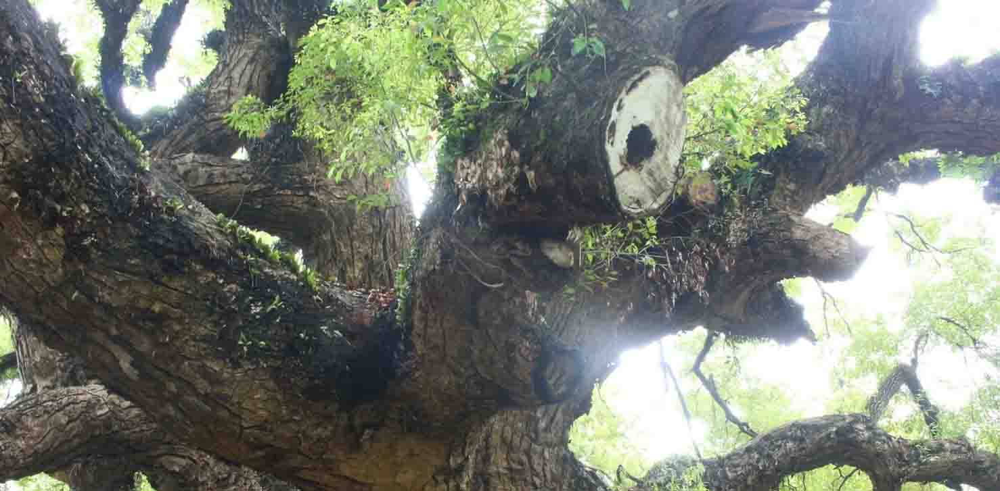
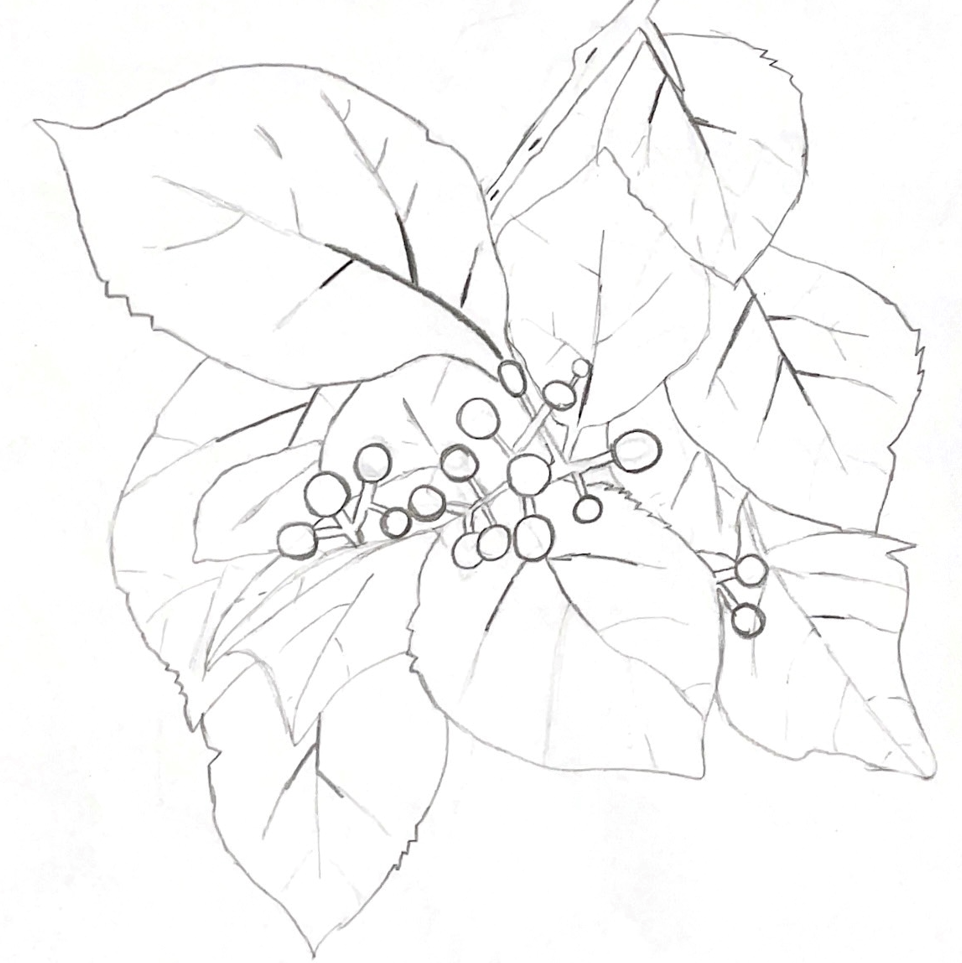

一個豔陽高照的好日子，我們一群人裝備齊全、浩浩蕩蕩地從遊覽車下來，活像個典型的死觀光客，但其實，我們背負著實地探訪、文化調查的任務在身。
酪梨相當怕水，因此在種植時需十分注重園區內的排水，幸運的是林先生的果園位於丘陵地，地勢較高，無需擔心排水問題，除非在採收時遭遇豪大雨，才會嚴重影響品質。
而採摘下來的酪梨除了靠自己販賣外，也會配合著像是在當地的興農社區、在地青農農產品銷售等。


我們隨著老師及興隆里長一同從小巷，開始窺探這裡的一切。里長邊漫步邊娓娓道出車籠埔三個字的來由：以前山上的原住民與漢人的接觸不多，所以當時的原住民還有「出草」的行為。每次有漢人被出草，就會在街道上留下遍地駭人的遺體，甚至數量多到需要用手推車來運送、處理，所以一開始得名——「車人埔」，意指車子運送人體到墓仔埔。可大家希望讓此地能夠從歷史的傷痛中走出來，因此將「人」改成臺語音近的「籠」。

話說興隆里有顆樹齡過百年的老樟樹，關於它，里長提到一個頗具靈異色彩的故事……里長指著老樹下的兩棵小樟樹，面露感慨地說：「原本為了使老樟樹的養分不被分散，可以好好生長，想移除這兩棵小樟樹。但在砍樹前不久，我的手突然沒來由的痛了起來，完全找不到原因。而因緣際會下遇到的玄學老師一知曉我的狀況便問我：『最近是不是要砍樹？』我當下就嚇到了！因為要砍樹這事只有我和建設公司知道而已，我事後馬上取消了這項砍樹計畫……」
「想必是老樹在保護這兩位小朋友吧！」里長接著說。
「他們生長在這裡久了，已經產生感情嘍～你們就當聽故事就好，但這的確是我真實發生過的事情。」
當我們聽完這個故事，在覺得不可思議之餘，也不禁感嘆道，這或許就是萬物皆有靈的最佳應證吧！世上的靈異事件沒少發生，寧可信其有，不可信其無。這些樹木花草也都是活生生、美麗的生命啊！在場的我們，面對著這顆參天大樹，不由得肅然起敬了幾分。
話途中，里長走到一棵樹樁旁，老師好奇的問里長這原本是什麼樹？里長表示里民因為直接採摘破布子的難度太大、容易黏手，都會將破布子樹砍倒後再摘取，砍倒後的木頭也不會浪費，能當作木材使用。
但老師認為，只因為圖自己方便就砍倒樹的作法並不妥當，便與里長爭論起來。在我們搜尋資料後發現，被農民砍倒的破布子樹其實不但並沒有死亡，狀態還會更勝於從前，原來樹樁的頹勢是為了將來更華麗的重生。

半天的實地考察在轉眼間就結束了，在這短短幾小時內，我們認識了興隆里的地理環境、產業發展，了解了車籠埔的由來，也見識到了這裡豐富的自然生態資源，大家累得不成人形，也是這時的我們才知道，原來所有人之中，最有活力的那位是老師。